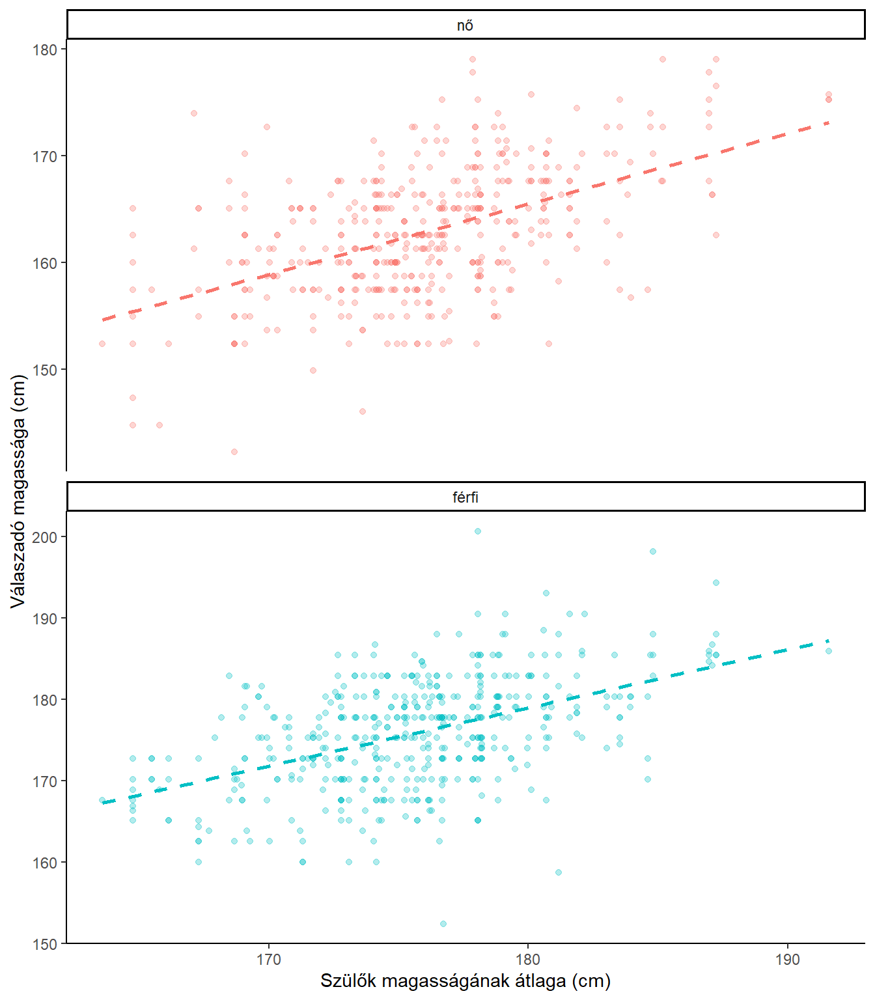
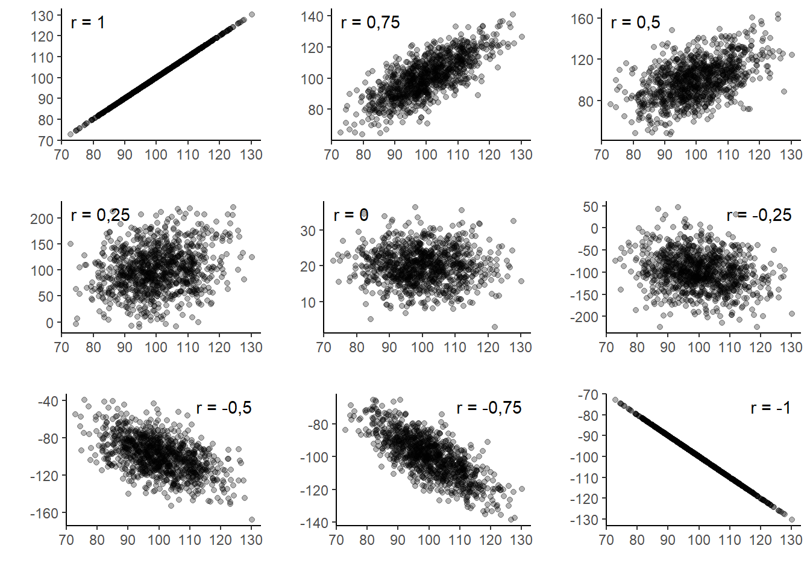
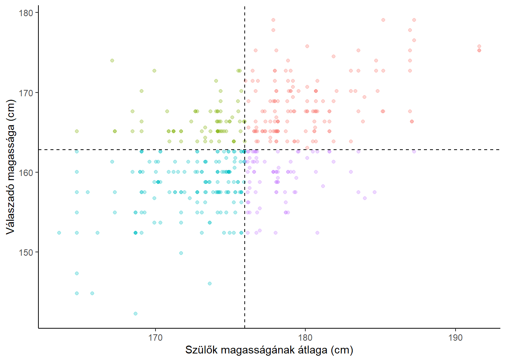

A korrelációszámítás ugyanarra a kérdésre keresi a választ, mint a kereszttáblához kapcsolódó függetlenségvizsgálat: van-e összefüggés valamely vizsgált populációban két változó között? Míg azonban a kereszttábla két nominális vagy ordinális változó összefüggésénél használható, a korreláció alapvetően két intervallum- vagy arányskála mérési szintű változó összefüggését vizsgálja. Ezen túl rangkorrelációt két ordinális változó között is tudunk már számolni.
A korreláció esetén sincs feltétlenül független és függő változó, és a köztük lévő együttjárás, kapcsolat sem kell, hogy oksági kapcsolat legyen.
| Függő változó | |||
Nominális, ordinális | Intervallum-, arányskála | ||
| Független változó | Nominális, ordinális | Kereszttábla | t-próba és tsai., ANOVA |
| Intervallum-, arányskála | Korreláció | ||
Az alábbi pontdiagramok 481 fiú és 453 lány testmagasságának és szüleik testmagasságai átlagának összefüggését szemléltetik. Minden egyes pont egy gyerek az adatbázisból. Az x koordináta a szülei magasságának átlaga, az y koordináta pedig a gyermek magassága. Látható, hogy a magasabb szülők gyermekei között nagyobb számban találunk magasabb gyermekeket, és fordítva, az alacsonyabb szülők gyermekei között több az alacsonyabb. Ennek eredményeképpen a pontfelhő egy-egy emelkedő meredekségű egyenes két oldalán szóródik. Ezt az összefüggést, ennek erősségét és irányát számszerűsíti a korrelációs együttható. Ennek több formája van. Az első, amelyet megnézünk a Pearson-féle lineáris korrelációs együttható.

A Pearson-féle korrelációs együttható két normális eloszlású intervallum- vagy aránskála mérési szintű változó közötti lineáris kapcsolat erősségét méri. Ha a két változó között más típusú kapcsolat van, nem pedig lineáris, akkor elképzelhető, hogy a korrelációs együttható értéke annak ellenére alacsony, hogy a két változó viszonylag erősen összefügg. Ha viszont a két változó független egymástól, akkor a korrelációs együttható is nulla közeli értéket vesz fel. Ha a populációról van szó, akkor függetlenség esetén 0 az értéke, minta esetén természetesen lehetnek ettől kisebb eltérések. A Pearson-féle korrelációs együtthatót r-rel fogjuk jelölni, időnként, ha szükséges (mert pl. több korrelációval dolgozunk), indexben kiegészítjük úgy, hogy egyértelmű legyen, mely korrelációról van szó: pl. jelölve, mely változók közötti korreláció, rxy formában vagy pedig számozva, r1, r2, stb. formában.
A fenti esetben a női válaszadók körében r = 0.513 a korreláció a szülők átlagos magassága és a válaszadó magassága között, a férfiak körében pedig r = 0.483.
A korrelációs együttható értéke -1 és +1 között van. 0 jelenti a függetlenséget, -1 és +1 a legerősebb összefüggést. A negatív értékek negatív irányú összefüggést jelölnek, vagyis ebben az esetben minél nagyobb egyik változó értéke, várhatóan annál kisebb a másik változóé. A pozitív értékek pozitív kapcsolatot mutatnak, vagyis minél nagyobb egyik változó értéke, várhatóan annál nagyobb a másik változóé is. Ez látható a fenti példában is: minél magasabbak a szülők, annál magasabb a gyermekük.
Az alábbi ábrán azt láthatják, milyen pontdiagramnak milyen lineáris korrelációs együttható felel meg (ezek csak körülbelüli értékek). Láthatják, hogy minél erősebb az összefüggés, annál inkább egy egyenesre illeszkednek a pontok (ezért nevezzük lineárisnak az összefüggést). Szintén láthatják, hogy a pozitív korrelációk esetén emelkedik az egyenes (a nagyobb x értékekhez nagyobb y értékek tartoznak), a negatív korrelációk esetén pedig lejt (nagyobb x értékekhez kisebb y értékek tartoznak).

A korrelációs együttható tulajdonságai: A korreláció szimmetrikus mutató, tehát a szülők magassága és a gyermekek magassága közötti korreláció ugyanannyi, mint a gyermekek magassága és a szülők magassága közti.
A korrelációs együttható független a változók mértékegységétől. Ha a magasság nem cm-ben lenne mérve, hanem hüvelykben, lábban, méterben, vagy bármilyen más mértékegységben, a korrelációs együttható akkor sem változna. A korrelációból nem következik, hogy a két változó között oksági kapcsolat van. A korreláció csak együttjárást, összefüggést jelez, de ez még csak nem is feltétlenül közvetlen összefüggés, hanem például eredhet abból is, hogy két változó ugyanarra a harmadik változóra (okra) vezethető vissza. Így például azok a változók, amelyek összefüggnek a jövedelemmel, egymással is korrelálni fognak, még ha nincs is köztük közvetlen összefüggés.
Az alábbi ábrán a női válaszadókat láthatják. A szaggatott vonalak a szülői magasságok átlagát (függőleges) és a válaszadók átlagmagasságát (vízszintes) jelölik. Az egyes válaszadók lehetnek magasabbak vagy alacsonyabbak is az átlagnál, és szüleik is lehetnek magasabbak és alacsonyabbak, mint az átlagos szülők. Vannak olyanok, akiknek szüleik is, és ők is magasabbak a megfelelő átlagnál (piros szín), vannak olyanok akik maguk magasabbak, de szüleik alacsonyabbak (lila), vannak, akik alacsonyabbak és szüleik is azok (kék), végül olyanok is, akik magasabb szülők gyermekei, de ők maguk az átlagnál alacsonyabbak (zöld). A korreláció ezeket az eltéréseket használja fel. 
A korrelációs együttható képlete:
\[r = \frac{\sum_{i=1}^{n}(x_i-\overline{x})(y_i-\overline{y})}{\sqrt{\sum_{i = 1}^{n}(x_i-\overline{x})^2\times\sum_{i=1}^{n}(y_i-\overline{y})^2}}\]
A számlálóban lévő szorzat attól függően, hogy a két változó értéke hogyan tér el a megfelelő átlagtól lehet pozitív vagy negatív. Ezen kívül minél nagyobb az eltérés, annál nagyobb a szorzat. A jobb felső és bal alsó negyedben a szorzat pozitív, a jobb alsó és bal felső negyedben a szorzat negatív. Attól függően, mely eltérések jellemzőbbek (a nagyobb eltérések nagyobb súllyal számítanak) lesz a szorzatok összege pozitív vagy negatív. Ha a kettő hasonló mértékű, akkor kioltják egymást, és az összeg 0 (közeli) lesz.
Tegyük fel, hogy van az alábbi 20 fős mintánk, amelyben azt vizsgáltuk, mennyire bízik valaki a kormányban, és mennyire a parlamentben (%-ban megadva). Tegyük fel, hogy a két változó normális eloszlású.
Az alábbi táblázatban minden oszlop egy megfigyelésnek (egy válaszadónak) felel meg. Látható a válaszadó sorszáma, hogy mennyire bízik a kormányban, és mennyire bízik a parlamentben.
| Sorszám | 1 | 2 | 3 | 4 | 5 | 6 | 7 | 8 | 9 | 10 | 11 | 12 | 13 | 14 | 15 | 16 | 17 | 18 | 19 | 20 |
| Kormány | 80 | 60 | 70 | 90 | 50 | 30 | 25 | 50 | 60 | 75 | 80 | 70 | 50 | 40 | 20 | 60 | 75 | 60 | 50 | 45 |
| Parlament | 90 | 70 | 60 | 75 | 40 | 50 | 30 | 70 | 50 | 80 | 60 | 75 | 70 | 60 | 30 | 60 | 70 | 50 | 60 | 30 |
A korrelációs együttható kiszámításához először a két változó átlagát kell kiszámítani a számtani átlag szokásos képletével:
A kormány iránti bizalom átlaga 57, a parlament iránti bizalom átlaga pedig 59. Látható, hogy a korrelációs együttható kiszámításához szükség van az egyes x és y értékeknek az átlagtól való eltérésére. Ezeket az eltéréseket egyrészt szoroznunk kell egymással (a számláló kiszámításához), illetve külön-külön négyzetre kell emelni (a nevezőhöz). Utóbbi háromnak (szorzat, egyik és másik négyzetes eltérések) összegére lesz szükségünk. A legegyszerűbb és legáttekinthetőbb az alábbi táblázatos formában leírni a részeredményeket:
| Sorszám | $$x_i$$ | $$y_i$$ | $$x_i-\overline{x}$$ | $$y_i-\overline{y}$$ | $$(x_i-\overline{x})(y_i-\overline{y})$$ | $$(x_i-\overline{x})^2$$ | $$(y_i-\overline{y})^2$$ |
|---|---|---|---|---|---|---|---|
| 1 | 80 | 90 | 23 | 31 | 713 | 529 | 961 |
| 2 | 60 | 70 | 3 | 11 | 33 | 9 | 121 |
| 3 | 70 | 60 | 13 | 1 | 13 | 169 | 1 |
| 4 | 90 | 75 | 33 | 16 | 528 | 1089 | 256 |
| 5 | 50 | 40 | -7 | -19 | 133 | 49 | 361 |
| 6 | 30 | 50 | -27 | -9 | 243 | 729 | 81 |
| 7 | 25 | 30 | -32 | -29 | 928 | 1024 | 841 |
| 8 | 50 | 70 | -7 | 11 | -77 | 49 | 121 |
| 9 | 60 | 50 | 3 | -9 | -27 | 9 | 81 |
| 10 | 75 | 80 | 18 | 21 | 378 | 324 | 441 |
| 11 | 80 | 60 | 23 | 1 | 23 | 529 | 1 |
| 12 | 70 | 75 | 13 | 16 | 208 | 169 | 256 |
| 13 | 50 | 70 | -7 | 11 | -77 | 49 | 121 |
| 14 | 40 | 60 | -17 | 1 | -17 | 289 | 1 |
| 15 | 20 | 30 | -37 | -29 | 1073 | 1369 | 841 |
| 16 | 60 | 60 | 3 | 1 | 3 | 9 | 1 |
| 17 | 75 | 70 | 18 | 11 | 198 | 324 | 121 |
| 18 | 60 | 50 | 3 | -9 | -27 | 9 | 81 |
| 19 | 50 | 60 | -7 | 1 | -7 | 49 | 1 |
| 20 | 45 | 30 | -12 | -29 | 348 | 144 | 841 |
| $$\overline{x}= 57 $$ | $$\overline{y}= 59 $$ | $$\sum: 4590 $$ | $$\sum: 6920 $$ | $$\sum: 5530 $$ |
Amire érdemes odafigyelni: a két eltérés szorzata pozitív vagy negatív szám is lehet: két pozitív vagy két negatív szám szorzata pozitív, egy pozitív és egy negatív szám szorzata viszont negatív lesz, mint azt láthatják pl. a 8., 9., stb. válaszadók esetében. A négyzetes eltérések viszont minden esetben pozitívak.
Fokozottan figyeljenek oda az átlag kiszámítására, mert ezen áll vagy bukik az összes további számítás!
Miután megvannak a szükséges összegek, már csak be kell helyettesíteni a korrelációs együttható képletébe:
\[r = \frac{\sum(x_i-\overline{x})(y_i-\overline{y})}{\sqrt{\sum(x_i-\overline{x})^2\times\sum(y_i-\overline{y})^2}}=\frac{4590}{\sqrt{6920\times5530}}=0,742\]
A két változó között tehát a mintában viszonylag erős, pozitív korreláció van, vagyis akik jobban bíznak a kormányban, azok jellemzően a parlamentben is jobban bíznak, és fordítva.